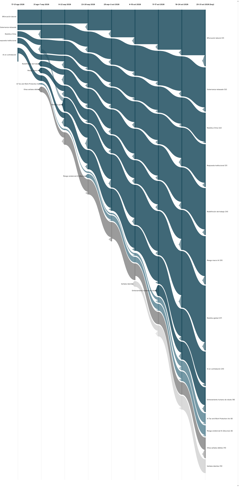

|
Vigilancia Tecnológica Competitiva
Señales del cambio
Semana 9 · 2 de noviembre de 2026
Microsoft ofrece bajas voluntarias a 60.000 empleados el mismo mes en que datos censales y del BLS confirman, con cifras y no solo anécdotas, que la contratación júnior cae en los sectores más expuestos a la IA — mientras nace una señal nueva que documenta el contrapeso: empresas que recontratan a quienes despidieron esperando que la IA cubriera su puesto.
|
Resumen ejecutivo
189 observaciones nuevas procesadas entre el 25 y el 31 de octubre (la base histórica no registró observaciones adicionales en el periodo). Por volumen, esta edición prioriza 46 observaciones de mayor relevancia estratégica; otras 14 resultaron ser re-cobertura del mismo hecho ya contado y se excluyen explícitamente. El registro de señales crece de 24 a 25 (nace una señal débil nueva): 9 fuertes, 6 débiles con potencial de escalar, 1 débil activa sin tendencia alcista por ahora, y 9 señales en estado latente — las mismas que la semana pasada, aunque cuatro de ellas están ya a una edición del umbral de señal "muerta".
Los tres movimientos más relevantes de la semana:
- Microsoft ofrece bajas voluntarias a cerca de 60.000 empleados (casi una cuarta parte de su plantilla) mientras redirige inversión masiva hacia IA, y Países Bajos anuncia un plan para recortar 25.000 empleos públicos de aquí a 2035 apoyándose en IA — el mayor volumen de reestructuración de plantilla citando IA del registro hasta ahora.
- Datos censales, del BLS, de la Reserva Federal de Filadelfia y del Financial Times convergen por primera vez en evidencia cuantitativa (no solo anecdótica) de que la contratación júnior cae en los sectores más expuestos a la IA, con caídas de hasta el 12% entre trabajadores jóvenes.
- Nace una señal débil nueva que documenta el contrapeso a la narrativa de sustitución: empresas que despidieron personal apostando por la IA ahora recontratan a esos mismos trabajadores, a menudo en peores condiciones; Gartner predice que al menos un 30% de esos puestos será restaurado antes de 2029.
|
|
Principales insights
|
|
Señales de la semana
|
|
Gráfico de evolución
Flujo de las 9 señales macro y las dos señales débiles más notorias, a lo largo de nueve periodos. El grosor de cada banda es proporcional al número de evidencias que la respaldan. La banda de señales latentes (gris claro) se mantiene estable esta edición.

|
|
Descripción textual del gráfico (por si no se renderiza la imagen): De izquierda a derecha, nueve columnas temporales desde 17–31 ago 2026 hasta 25–31 oct 2026 (hoy). Las nueve señales macro llegan a la última columna con anchos distintos según su evidencia acumulada: Robótica global sigue siendo, con mucha diferencia, la más gruesa (47), seguida de Bifurcación laboral (41), Riesgo macro IA (35), Redefinición del trabajo (34), Gobernanza rebasada (32), Respuesta institucional (31), IA en contratación (25), Robótica China (22), y Entrenamiento humano de robots (18). De las señales débiles, se muestran como bandas propias las dos con más evidencia: AI Tax and Work Protection Act y la escalada del discurso de riesgo existencial de la IA (8 cada una, empatadas). La banda de señales latentes se mantiene en 9 (gris más claro), y ninguna señal ha llegado todavía a estado "muerta", aunque cuatro están a una edición de cruzar ese umbral.
|
|
Señales a tener en cuenta
- Efecto bumerán (nueva). Empresas que despidieron personal apostando por la IA ahora recontratan a esos mismos trabajadores, a menudo en peores condiciones; Gartner predice que al menos un 30% de los puestos eliminados por IA será restaurado antes de 2029 — el primer contrapeso cuantificado a la narrativa de sustitución permanente.
- Resistencia directa a robots. Escala esta semana: la protesta de empleados de Boston Dynamics continúa, una startup de San Francisco recibe amenazas por su oferta de "paseadores de perros-robot", y un concejal de Filadelfia propone gravar a los dueños de robots de reparto — la resistencia ciudadana empieza a convertirse en propuesta política.
- OpenExecutive, el centro NSF de coadaptación, la plataforma china de IA encarnada y la predicción de Musk. Las cuatro llevan ya siete ediciones consecutivas sin evidencia nueva — a una edición del umbral de señal "muerta" (ocho ediciones) si no reaparecen la próxima semana.
- AI Tax and Work Protection Act. El Tax Policy Center publica un análisis formal sobre la erosión de los impuestos sobre nómina por el desplazamiento de IA, consolidando el debate como cuestión de política fiscal, no solo de proyecto de ley puntual.
|
|
Movimientos del histórico
Nueva señal débil: el "efecto bumerán" (recontratación tras despidos fallidos por IA) nace directamente como Débil↑, por volumen y diversidad de fuentes (Gartner, Globe and Mail, CNBC) en una sola edición.
Escaló: resistencia directa a robots pasa de Débil a Débil↑ en su segunda edición, con evidencia que diversifica en tres direcciones (protesta continuada, reacción vecinal hostil, propuesta política).
Sin cambios en latentes: el registro se mantiene en 9 señales latentes, las mismas que la semana pasada. OpenExecutive, el centro NSF de coadaptación, la plataforma china de IA encarnada y la predicción de Musk llegan a siete ediciones sin evidencia nueva — a una edición del umbral de "muerta" (ocho ediciones). Ninguna señal ha cruzado ese umbral todavía.
|
|
Cierre
Pregunta abierta: esta semana conviven, en el mismo registro, la mayor ola de recortes de plantilla citando IA hasta la fecha y la primera evidencia documentada de que una parte de esos recortes se revierte meses después, con los mismos trabajadores readmitidos en peores condiciones. Si tu organización está evaluando (o ya ejecutó) una reducción de plantilla apostando por la IA: ¿tienes forma de medir, dentro de seis meses, si esa apuesta se cumplió — o tendrás que descubrirlo recontratando?
Metodología: cada señal es trazable a observaciones concretas en la base de vigilancia. Una señal pasa a "latente" tras 4 ediciones sin evidencia nueva, y a "muerta" tras 8; ninguna del registro actual ha cruzado el segundo umbral todavía.
|
|